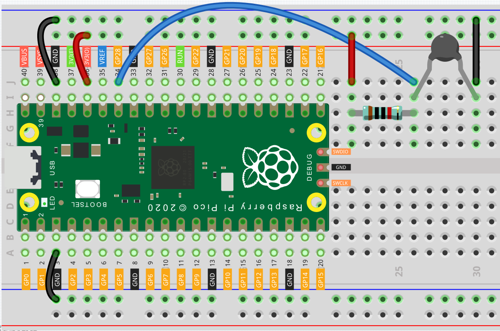

Thermometer¶
A thermistor is a thermally sensitive resistor that exhibits a precise and predictable change in resistance proportional to small changes in temperature. How much its resistance will change is dependent upon its unique composition. Thermistors are the parts of a larger group of passive components. And unlike their active component counterparts, passive devices are incapable of providing power gain, or amplification to a circuit.
Thermistor is a sensitive element, and it has two types: Negative Temperature Coefficient (NTC) and Positive Temperature Coefficient (PTC), also known as NTC and PTC. Its resistance varies significantly with temperature. The resistance of PTC thermistor increases with temperature ,while the condition of NTC is opposite to the former In this experiment we use NTC.
The principle is that the resistance of the NTC thermistor changes with the temperature of the outer environment. It detects the real-time temperature of the environment. When the temperature gets higher, the resistance of the thermistor decreases. Then the voltage data is converted to digital quantities by the A/D adapter.
The temperature in Celsius or Fahrenheit is output via programming.
Wiring¶
将 Pico 的3V3和 GND 连接至面包板的电源总线。
将Thermistor的一端接入负极电源总线，另一端串联一个10kΩ电阻器接入正极电源总线。
用一根跳线从两个电阻器中间接入GP28。
Note
In this experiment, a thermistor and a 10k pull-up resistor are used. Each thermistor has a normal resistance. Here it is 10k ohm, which is measured under 25 degree Celsius.
import machine
import utime
import math
thermistor = machine.ADC(28)
while True:
temperature_value = thermistor.read_u16()
Vr = 3.3 * float(temperature_value) / 65535
Rt = 10000 * Vr / (3.3 - Vr)
temp = 1/(((math.log(Rt / 10000)) / 3950) + (1 / (273.15+25)))
Cel = temp - 273.15
Fah = Cel * 1.8 + 32
print ('Celsius: %.2f C Fahrenheit: %.2f F' % (Cel, Fah))
utime.sleep_ms(200)
How it works?¶
import math
There is a numerics library which declares a set of functions to compute common mathematical operations and transformations.
temperature_value = thermistor.read_u16()
This function is used to read the value of the thermistor.
Vr = 3.3 * float(temperature_value) / 65535
Rt = 10000 * Vr / (3.3 - Vr)
temp = 1/(((math.log(Rt / 10000)) / 3950) + (1 / (273.15+25)))
Cel = temp - 273.15
Fah = Cel * 1.8 + 32
print ('Celsius: %.2f C Fahrenheit: %.2f F' % (Cel, Fah))
utime.sleep_ms(200)
These calculations convert the thermistor values into centigrade degree and Fahrenheit degree.
Vr = 3.3 * float(temperature_value) / 65535
Rt = 10000 * Vr / (3.3 - Vr)
These two lines of codes are calculating the voltage distribution with the read value analog so as to get Rt (resistance of thermistor).
temp = 1/(((math.log(Rt / 10000)) / 3950) + (1 / (273.15+25)))
Note
Here is the relation between the resistance and temperature: RT =RN expB(1/TK – 1/TN)
RT is the resistance of the NTC thermistor when the temperature is TK.
RN is the resistance of the NTC thermistor under the rated temperature TN. Here, the numerical value of RN is 10k.
TK is a Kelvin temperature and the unit is K. Here, the numerical value of TK is 273.15 + degree Celsius.
TN is a rated Kelvin temperature; the unit is K too. Here, the numerical value of TN is 273.15+25.
And B(beta), the material constant of NTC thermistor, is also called heat sensitivity index with a numerical value 3950.
exp is the abbreviation of exponential, and the base number e is a natural number and equals 2.7 approximately.
Convert this formula TK=1/(ln(RT/RN)/B+1/TN) to get Kelvin temperature that minus 273.15 equals degree Celsius.
This relation is an empirical formula. It is accurate only when the temperature and resistance are within the effective range.
This code refers to plugging Rt into the formula TK=1/(ln(RT/RN)/B+1/TN) to get Kelvin temperature.
temp = temp - 273.15
Convert Kelvin temperature into centigrade degree.
Fah = Cel * 1.8 + 32
Convert the centigrade degree into Fahrenheit degree.
print ('Celsius: %.2f °C Fahrenheit: %.2f ℉' % (Cel, Fah))
Print centigrade degree, Fahrenheit degree and their units on the display.